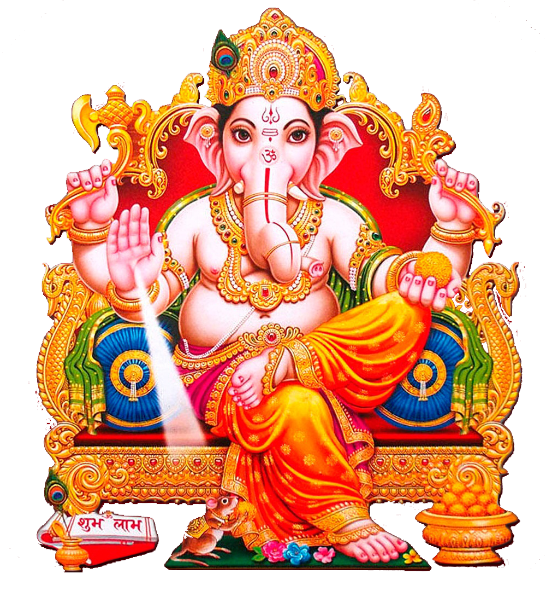

Ganesh Puja - Worship of Lord Ganesha

What is Ganesh Puja?
Why Perform Ganesh Puja?
Benefits
How to Perform
Conclusion
Ganesh Puja: Worship of Lord Ganesha
Ganesh Puja is a sacred Hindu ritual dedicated to Lord Ganesha, the remover of obstacles and the god of wisdom and prosperity. This puja is performed to seek his blessings for success, wisdom, and the removal of all hurdles in life.
What is Ganesh Puja?
Ganesh Puja is an important Hindu tradition that honors Lord Ganesha, the elephant-headed deity who symbolizes wisdom, prosperity, and the removal of obstacles. The puja is performed to invoke his blessings for a smooth and prosperous life, free from challenges and hindrances.
Why Do We Perform Ganesh Puja?
- Remover of Obstacles: Ganesh Puja is performed to seek Lord Ganesha's help in removing physical, emotional, and spiritual obstacles from one's life.
- Prosperity and Success: Lord Ganesha is believed to bring success in new ventures, work, and endeavors.
- Wisdom and Knowledge: Ganesh is worshipped for acquiring wisdom and knowledge, helping in intellectual and spiritual growth.
- Peace and Happiness: The puja brings peace and harmony, both in the individual and in their relationships with others.
- Favorable Beginnings: Ganesh Puja is often performed before starting any new venture, journey, or project to ensure success and a smooth start.
Benefits of Ganesh Puja
- Removal of Obstacles: Ganesh Puja helps clear physical, mental, and spiritual obstacles that hinder progress.
- Success and Prosperity: The puja invites blessings of prosperity and success in work, business, and personal endeavors.
- Spiritual Growth: Devotees gain spiritual wisdom and knowledge, leading to higher consciousness and personal growth.
- Peace and Harmony: Regularly performing the puja promotes a sense of peace, tranquility, and harmony in the home and work life.
- Increased Luck: Performing the puja is believed to attract good fortune, luck, and success in all aspects of life.
How to Perform Ganesh Puja (Step-by-Step)
Ganesh Puja is typically performed during Ganesh Chaturthi or on any auspicious occasion when starting something new. Here’s how to perform the puja:
- Preparation: Cleanse the space or altar and place an idol or image of Lord Ganesha. Offer flowers, incense, a lamp (preferably ghee), and fruits or sweets.
- Cleanse Yourself: Take a bath and wear clean clothes, preferably in colors like red, yellow, or green, which are associated with auspiciousness.
- Offer Flowers and Incense: Offer fresh flowers to Lord Ganesha and light incense to purify the surroundings.
- Chant Ganesh Mantras: Recite mantras like "Om Gan Ganapataye Namah" or "Jai Ganesh" to invoke Lord Ganesha's blessings.
- Offer Prayers: Pray for the removal of obstacles, success in endeavors, and wisdom to make the right decisions.
- Conclude the Puja: Perform the Aarti (singing devotional songs) and offer gratitude for Lord Ganesha’s presence and blessings.
- Prasad (Offering): Offer prasad such as modaks (Lord Ganesha's favorite sweet), fruits, and sweets to the deity and distribute it among family or devotees.
- Regular Practice: Regularly performing Ganesh Puja, especially during Ganesh Chaturthi, invites prosperity, wisdom, and protection in your life.
Conclusion
Ganesh Puja is a powerful ritual that helps devotees seek the blessings of Lord Ganesha for the removal of obstacles, success, prosperity, and spiritual growth. By performing this puja, one can achieve peace, happiness, and fulfillment in life.